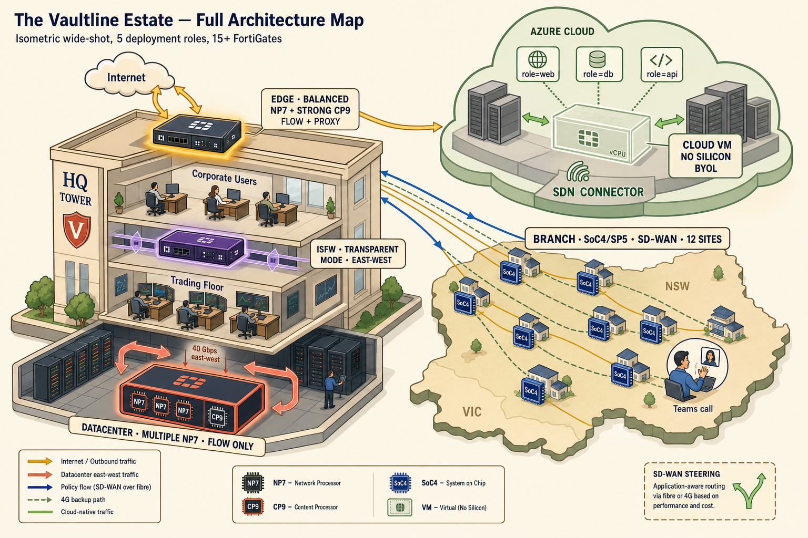
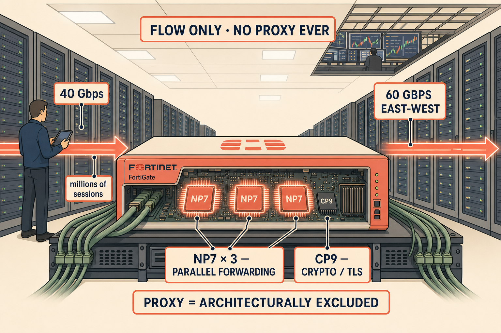
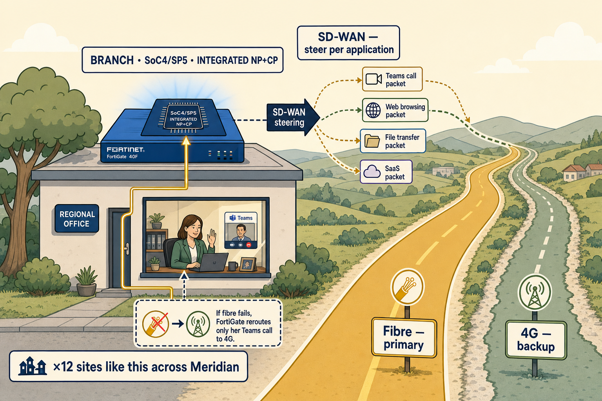
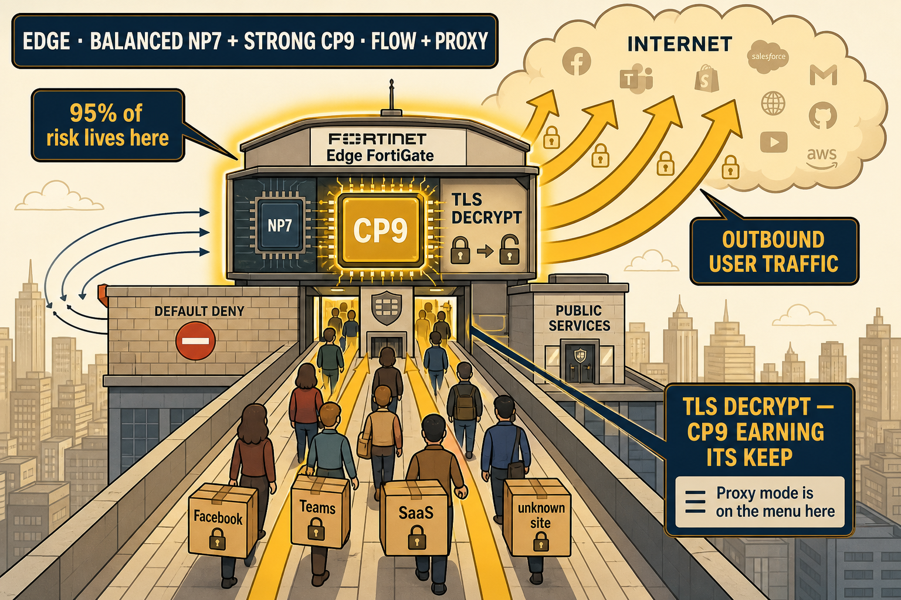
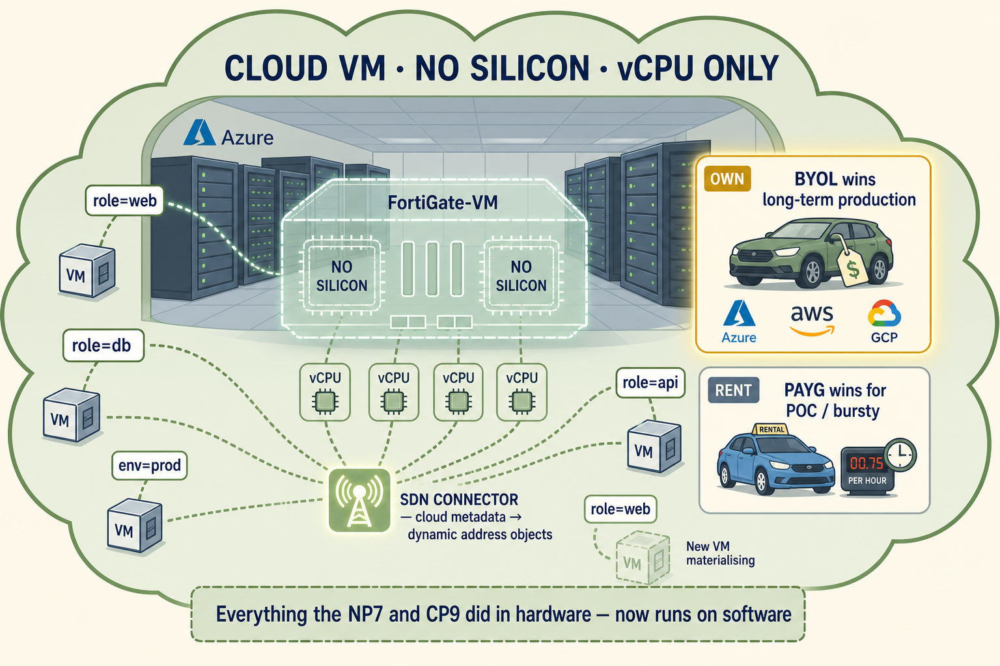

Wednesday morning at Vaultline Financial. The board has just approved something bigger than a firewall refresh — an acquisition, a datacenter renewal, a cloud migration, and twelve new branches, all in the same quarter. On Priya's desk sits a reseller's quote: fifteen units of the same mid-range FortiGate, everywhere, for everything.
The architecture map that follows is what an experienced consultant sees when they look at that quote. Where each firewall lives. What silicon it needs. Which inspection modes are on the menu. Why standardising across five architectural roles fails in both directions — waste at the branches, inadequacy at the datacenter, and something even stranger at the Azure cloud where the concept of silicon simply disappears.
This is the picture that reconstructs the whole session in one glance. Look at it. Walk through it. Come back to it before the exam.
Spatial memory beats table memory.
The exam does not ask "list the five deployment roles." It hands you a customer diagram and asks which model. The skill being tested is recognition — the ability to look at a picture and instantly place each firewall by role. A map trains that skill in a way a comparison table cannot.
Every FortiGate in the Vaultline map is labelled with its role, its silicon, and its inspection mode. Every arrow shows the dominant traffic direction. Every close-up scene captures the moment where role-defining decisions become visible. Study the whole map, then come back to any close-up when you want to feel a specific decision more deeply.
The Full Vaultline Estate
One isometric wide-shot. Every firewall visible. Every role labelled. The whole picture in a single frame.

The Datacenter, at Line Rate
Basement level. Server racks stretch into the distance. The FortiGate is not busy — it is fast.

This is where the Friday incident lived. Not on the trading floor itself, but here — where a single proxy profile, added to a single policy, would send every session to the CPU. Sixty gigabits of market data on a single overworked chip. Forty milliseconds of latency where there used to be one.
The datacenter FortiGate does not do proxy mode. It does not do it because it cannot do it. Not at this scale, not at this session count, not at this latency budget. What it does instead is quiet: three NP7 chips in parallel, each handling a subset of interfaces, moving packets at line rate while the CPU orchestrates from the sidelines.
The Branch on Two Roads
A regional office. Two internet links. A Teams call that cannot drop.

Twelve of these. Twelve small buildings in twelve small towns, each with one dependable link and one unreliable one, each with a handful of advisors whose day depends on the same voice call staying alive when a truck cuts a cable outside town.
The branch FortiGate does not need to be big. It needs to be clever. Its defining skill is not throughput — it is choosing which road to send each packet down. The datacenter's silicon is wasted here. So is its price tag. What matters is SD-WAN, and one integrated chip is exactly enough.
The Depot at the City Gates
The rooftop. Every parcel leaving the building passes through this checkpoint. Most people think the checkpoint is watching what arrives — they are wrong.

Most engineers imagine a firewall as a bouncer at the door, watching for attackers trying to get in. At an internet edge, the statistics tell a very different story. Almost nothing gets in that was not invited. What matters is what is going out.
Users clicking phishing links. Malware calling home. Files uploaded to unsanctioned cloud storage. Encrypted C2 tunnels hiding inside normal HTTPS. Ninety-five percent of the risk at the edge is outbound. And ninety-five percent of that outbound traffic is encrypted.
Which is why the edge FortiGate's most important chip is not the NP7. It is the CP9. Every encrypted session that needs deep inspection has to be decrypted, inspected, and re-encrypted — and only the CP9 has the crypto throughput to make that affordable at scale.
The Cloud, Where Silicon Vanishes
Above the map. Inside a stylised cloud. A FortiGate exists — but it has no chips. Only vCPUs. Only tags. Only trust.

In the cloud, silicon simply disappears. There is no NP7 to offload sessions. There is no CP9 to decrypt TLS at line rate. There is no dedicated crypto engine for IPsec. Everything that ran on a chip is now running on however many vCPUs Azure has been paid to allocate.
Which forced Fortinet to invent two new things. One: vCPU-based licensing — either the fixed subscription that entitles the VM to a certain vCPU count (BYOL, the "own it outright" model), or the marketplace hourly rate that scales with the VM size (PAYG, the "rental car" model). Long-lived production wins with BYOL. Bursty and POC workloads win with PAYG.
Two: SDN Connectors. Because cloud subnets change hourly, static IP-based policy breaks constantly. Instead, the FortiGate polls Azure's own API and translates cloud metadata — tags, resource groups, VM labels — into dynamic firewall address objects. A policy that says "allow role=web to reach role=db" continues working as DevOps engineers scale the estate. No policy edits required.
What this picture should reconstruct
- Five roles, one estate. If you can mentally walk the Vaultline diorama and name each firewall by role, silicon, and inspection mode, you can identify any FortiGate on any customer diagram or exam scenario.
- Traffic direction defines role. Outbound user traffic = Edge. East-west server traffic = Datacenter. Unequal-WAN steering = Branch. Inter-zone LAN traffic = ISFW. Any of these in the cloud = Cloud VM with no silicon.
- Silicon reveals the role even without a label. Three NP7s in parallel = datacenter. Big CP9 with modest NP7 = edge. Integrated SoC4/SP5 = branch. Ghost outline with vCPUs = cloud.
- The reseller's fifteen-of-one quote fails in both directions. Waste at the branches, inadequacy at the datacenter, and a category error at Azure where "hardware SKU" is not even the right framing.
- The map is spatial memory training. When you look at a customer diagram in six months, this diorama should overlay itself onto the customer's network like a template.
What Fortinet tests on this map
- Edge vs Datacenter confusion is the #1 trap. Both are big HQ boxes. Read the scenario for traffic direction and inspection mode. Not for box size.
- SoC as VPN hub is always wrong. If a scenario positions a branch model terminating 40+ tunnels for other branches, the scenario itself is the wrong answer.
- BYOL vs PAYG is a workload-duration question, not a definition question. Long-lived production = BYOL. Bursty / POC / dev = PAYG.
- ISFW justification must name all three: performance isolation, failure isolation, administrative boundary. "Segmentation" alone will lose marks.
- SDN Connector = dynamic address objects from cloud tags. If a scenario mentions dynamic discovery, tags, or resource groups, this is the answer.
- Cloud VMs have no NP7 or CP9. Every hardware acceleration answer you learned in Session 39 does not apply in the cloud. Everything runs on vCPU.